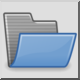

Панель інструментів / Піктограма:

Цей інструмент імпортує файл SVG у поточне креслення. Зауважте, що підтримується лише дуже обмежений набір тегів та аргументів SVG. Ідея полягає в тому, щоб імпортувати якомога більше сирої геометрії з файлу SVG.